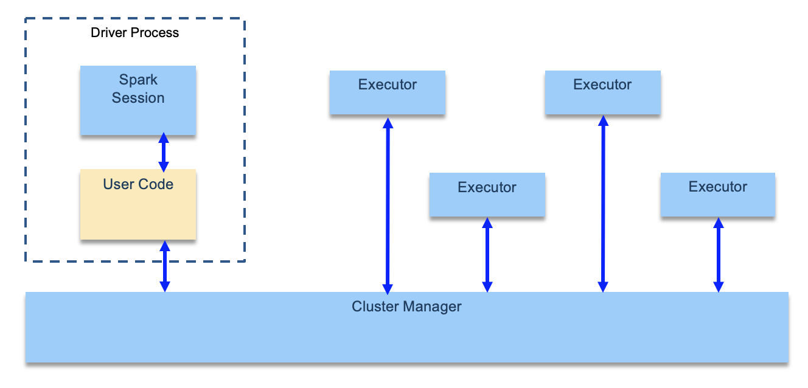
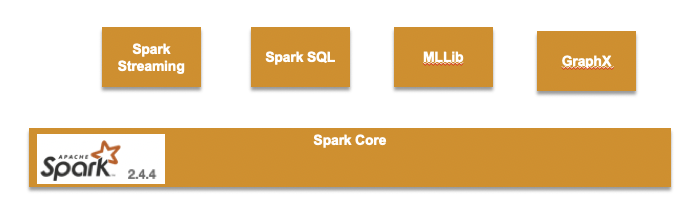
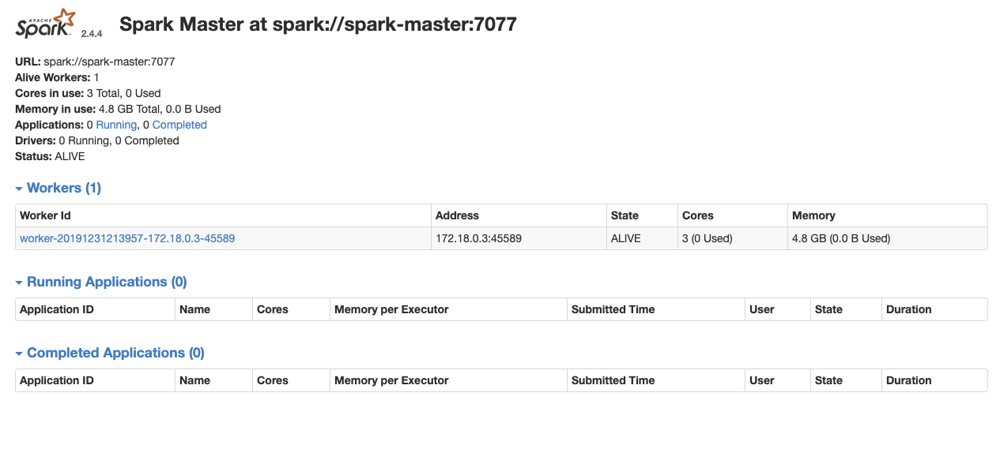

Spark studies
Started at UC Berkeley in 2009.
The goal of Spark is to offer an unified platform for writing big data application: this means consistent APIs to do data loading, SQL, streaming, machine learning... It provides an unified engine for parallel data processing on distributed systems to process large-scale data.
Characteristics
- Data is expensive to move so Spark focuses on performing computations over the data, no matter where it resides
- Provide a unified API for common data analysis tasks
- Spark includes libraries for SQL and structured data (Spark SQL), machine learning (MLlib), stream processing (Spark Streaming and the newer Structured Streaming), and graph analytics (GraphX)
- support large-scale machine learning using iterative algorithms that need to make multiple passes over the data.
- It uses a directed acyclic graph, or DAG, to define the workflow.
- It is built around the Resilient Distributed Dataset (RDD), and Dataset.
- It is written in Scala, and it is recommended to develop spark apps with scala, even if Python is a viable soluton for POC and prototype.
Concepts
-
Spark Applications consist of a driver process and a set of executor processes. The driver process runs your main() function, sits on a node in the cluster, and is responsible for three things:
- maintaining information about the Spark Application
- responding to a user’s program or input
- analyzing, distributing, and scheduling work across the executors.
-
each executor is responsible for only two things: executing code assigned to it by the driver, and reporting the state of the computation on that executor back to the driver node
- Spark employs a cluster manager that keeps track of the resources available
- RDD, Resilient Distributed Dataset, is the abstraction to manage distribed data in spark cluster.

- Other components of spark solution are the Machine learning library, Spark SQL (to apply SQL queries on spark dataset), GraphX:

- There is a SparkSession object available to the user, which is the entry point to running Spark code.
Installation on k8s or openshift cluster
The spark driver runs as pod. The driver creates executors which are also running within Kubernetes pods and connects to them, and executes application code. The driver and executor pod scheduling is handled by Kubernetes.
See the product documentation here
Run locally in docker
- 1st define docker network
When running locally to avoid some complex host to docker containers communication tools, like VPN or rsh, we need to define a network so the workers and master nodes can communicate.
docker network create spark_network
The Dockerfile, in this repository, is using a openjdk base image and install Spark 2.4.4, so here are the command to build the images and then start it with a shell.
docker build -t jbcodeforce/spark .
docker run --rm -it --name spark-master --hostname spark-master \
-p 7077:7077 -p 8085:8085 --network spark_network jbcodeforce/spark bash
- Start the Spark Master node:
Within the container run:
/spark/bin/spark-class org.apache.spark.deploy.master.Master --ip `hostname` --port 7077 --webui-port 8085 .... 19/12/31 21:24:56 INFO Utils: Successfully started service 'MasterUI' on port 8085. 19/12/31 21:24:56 INFO MasterWebUI: Bound MasterWebUI to 0.0.0.0, and started at http://a63a4db062fb:8085 19/12/31 21:24:56 INFO Master: I have been elected leader! New state: ALIVE
- Access the Spark console
Simply go to: http://localhost:8085/
- Start a worker node
As a separate docker container.
docker run --rm -it --name spark-worker --hostname spark-worker \
--network spark_network jbcodeforce/spark bash
then within the bash shell:
/spark/bin/spark-class org.apache.spark.deploy.worker.Worker \ --webui-port 8085 spark://spark-master:7077 ... INFO Utils: Successfully started service 'sparkWorker' on port 45589. 19/12/31 21:39:58 INFO Worker: Starting Spark worker 172.18.0.3:45589 with 3 cores, 4.8 GB RAM 19/12/31 21:39:58 INFO Worker: Running Spark version 2.4.4 19/12/31 21:39:58 INFO Worker: Spark home: /spark 19/12/31 21:39:58 INFO Utils: Successfully started service 'WorkerUI' on port 8085. 19/12/31 21:39:58 INFO WorkerWebUI: Bound WorkerWebUI to 0.0.0.0, and started at http://spark-worker:8085 19/12/31 21:39:58 INFO Worker: Connecting to master spark-master:7077... 19/12/31 21:39:58 INFO TransportClientFactory: Successfully created connection to spark-master/172.18.0.2:7077 after 75 ms (0 ms spent in bootstraps) 19/12/31 21:39:59 INFO Worker: Successfully registered with master spark://spark-master:7077
On the Spark console we can see the worker added:

Smoke test the cluster
Start a 3nd container instance to run the spark-submit command to compute the value of Pi:
/spark/bin/spark-submit --master spark://spark-master:7077 --class org.apache.spark.examples.SparkPi /spark/examples/jars/spark-examples_2.11-2.4.4.jar 1000
Using Docker compose
To manage workers and master and spark submit container, the best is to use docker-compose. The docker compose file is in the root directory of this repository.
It uses two scripts to start the master or worker automatically. The environment variables to parametrize the WEB UI port, master node URL, and master port are set in the docker compose file. Start the cluster with 3 workers.
docker-compose up --scale spark-worker=3 spark-master | 19/12/31 22:48:22 INFO Master: Registering worker 172.19.0.4:39193 with 3 cores, 4.8 GB RAM spark-master | 19/12/31 22:48:22 INFO Master: Registering worker 172.19.0.3:39161 with 3 cores, 4.8 GB RAM spark-master | 19/12/31 22:48:22 INFO Master: Registering worker 172.19.0.5:43775 with 3 cores, 4.8 GB RAM spark-worker_1 | 19/12/31 22:48:22 INFO Worker: Successfully registered with master spark://spark-master:7077 spark-worker_3 | 19/12/31 22:48:22 INFO Worker: Successfully registered with master spark://spark-master:7077 spark-worker_2 | 19/12/31 22:48:22 INFO Worker: Successfully registered with master spark://spark-master:7077
Considerations
- Spark executors are not really cattle as they are keeping data partitions. So from a pure spark architecture, a kubernetes deployment, may look like an anti-pattern.
- But RDD helps to compensate for pod failure
Run a sample python program
The source code is in [src/samples/FirstSparkProgram.py] that get the worse rated movie from the movie ratings in the data folder. To be able to run program as job on spark cluster we need to connect to the cluster and use spark-submit command. For that we are using another container instance, with the source code mounted to /home:
docker run --rm -it --network spark_network -v $(pwd):/home jbcodeforce/spark bash
In the shell within this container runs:
bash-4.4# spark-submit samples/FirstSparkProgram.py Amityville: Dollhouse (1996) 1.0 Somebody to Love (1994) 1.0 Every Other Weekend (1990) 1.0 Homage (1995) 1.0 3 Ninjas: High Noon At Mega Mountain (1998) 1.0 Bird of Prey (1996) 1.0 Power 98 (1995) 1.0 Beyond Bedlam (1993) 1.0 Falling in Love Again (1980) 1.0 T-Men (1947) 1.0